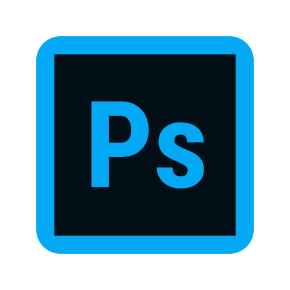
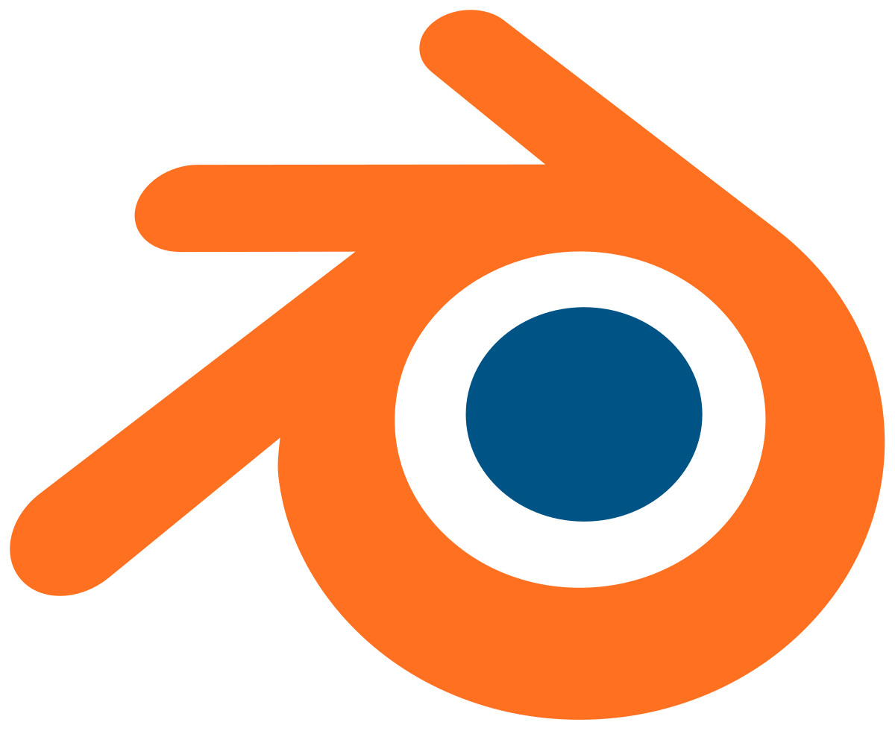

.png "3D modeling")
Creating a model yourself does not necessarily involve using special 3D or CAD programs. To do this, you can use the Photoshop CS6 Extended program.
3D modeling in Adobe Photoshop
3D modeling parameters have been improved in the Photoshop CS6 version and now include more intuitive on-screen controls that allow you to create three-dimensional models from a flat image, photos, or your own imagination, even for the least tech-savvy designers.
Although Photoshop has more limited functionality, once you have mastered Adobe's 3D tools, it will be much easier to switch to more professional 3D programs.
It will go well for those who want to make models for printing or just 3D drawings, since all subsequent programs are used for professional modeling and models for games.
On this site you can watch tutorials.
Blender
Blender — professional free and open source software for creating three-dimensional computer graphics, including tools for modeling, sculpting, animation, simulation, rendering, post-processing and editing video with sound, layout using "nodes" (Node Composing), as well as creating 2D animations.
Currently, it is very popular among free 3D editors due to its rapid stable development and technical support.
One of the important differences is everything."blend " - files are compatible with both older and newer versions of Blender. They are also portable from one platform to another and can be used as a means of transferring previously created work.
On this site you can watch tutorials.
Cinema 4D

Cinema 4D is a software package for creating three-dimensional graphics. What distinguishes the program from its competitors With 4D is its concise interface and Russian-language localization, which contributed to the spread of the program in the domestic market. In Cinema 4D, you can also render using the Guro method and animate objects.
The Guro toning method is a paint-over method in three-dimensional computer graphics designed to create the illusion of a smooth curved surface, described as a polygonal grid with flat faces, by interpolating the colors of adjacent faces.
It is a paid software
On this site you can watch tutorials.
Autodesk Maya

Maya has a wide range of 3D animation, modeling, and visualization functionality. The program is used to create animations, environments, motion graphics, virtual reality, and characters. It is widely used in the cinema, television and gaming industries.
Maya is a more professional program than 3D's Max.
On this site ou can watch tutorials.